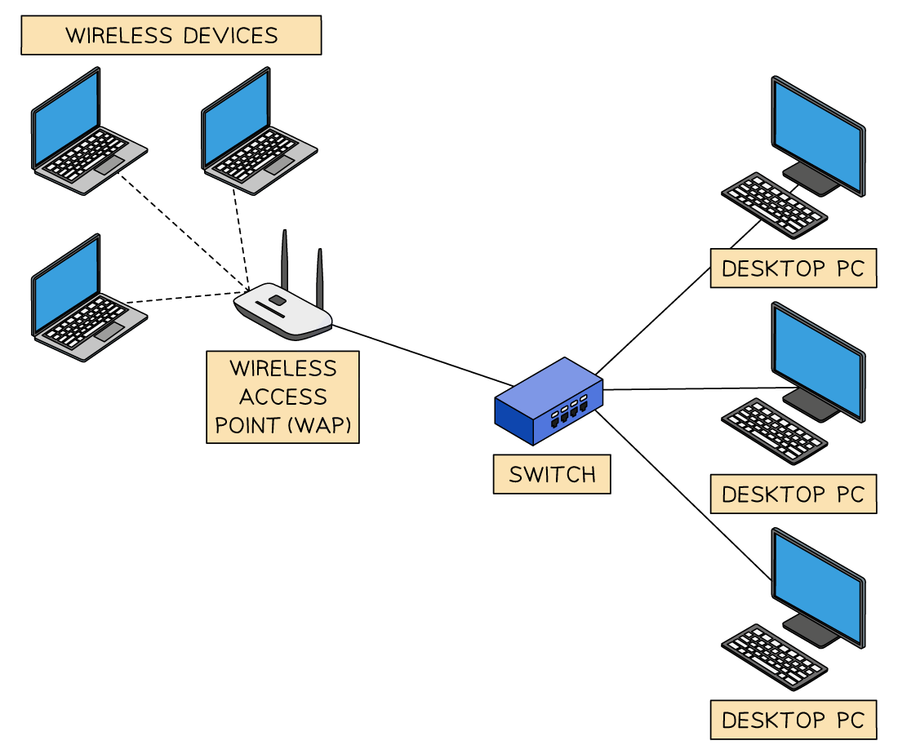
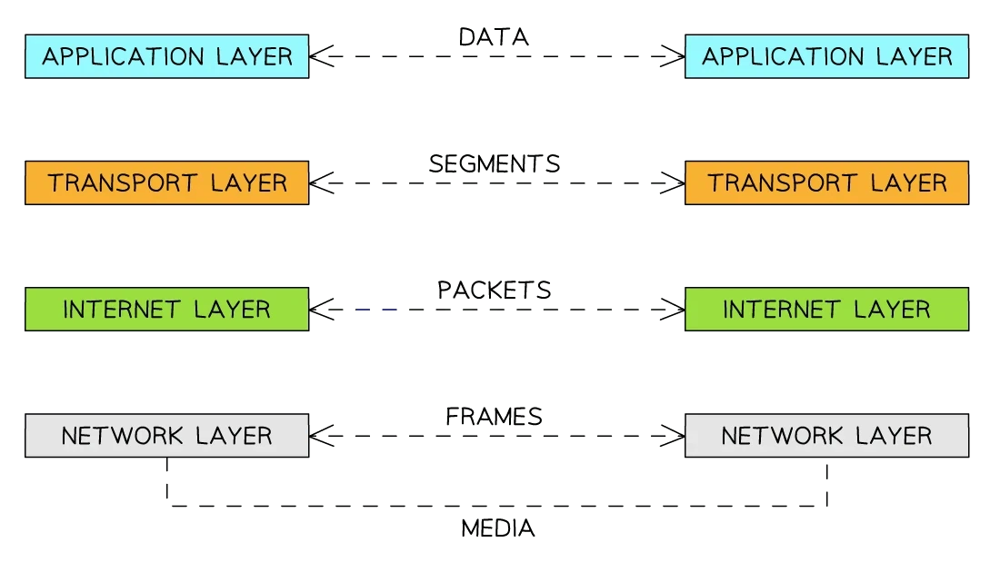
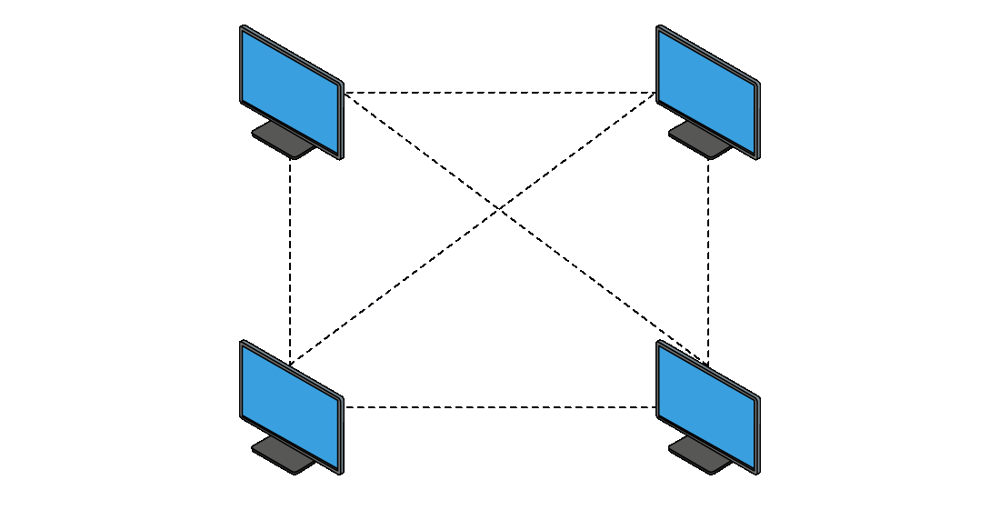

Big Idea 4 — Computer Systems and Networks (CSN): Review Notes
Syllabus: AP Computer Science Principles — Course and Exam Description, Effective Fall 2020
Exam Weight: 11–15% of AP Exam
Topics: 4.1–4.3
AP Classroom: Topic Questions ~10 multiple-choice
Overview
Big Idea 4 explains how computer systems and networks — primarily the Internet — work. You will learn how computing devices are grouped into systems and networks, how information is transmitted across the Internet in packets, and how the network finds a path and moves data from sender to receiver. Next, you will study the safeguards that keep the Internet from breaking down: fault tolerance achieved through redundancy, so that when a device or connection fails, the network keeps working. Finally, you will learn the effect that dividing tasks across multiple computing devices can have on the speed at which processes occur, comparing sequential, parallel, and distributed computing and computing the speedup of a parallel solution. This big idea is often taught in conjunction with Big Idea 5: Impact of Computing.
In this big idea you will learn to:
- Explain how computing devices work together in a network, and explain how the Internet works (routing, bandwidth, protocols, scalability)
- Explain how data are sent through the Internet via packets
- Describe the differences between the Internet and the World Wide Web
- Describe the benefits of fault tolerance, explain how a given system — like the Internet — is fault-tolerant, and identify vulnerabilities to failure in a system
- Compare sequential, parallel, and distributed computing solutions and determine the efficiency of solutions, including computing speedup
- Describe benefits and challenges of parallel and distributed computing
-
Know the packet story cold: information travels as a data stream split into chunks encapsulated in packets; each packet holds data plus metadata used for routing and reassembly; packets may arrive in order, out of order, or not at all (they take different paths and can be lost). TCP reassembles and reorders packets (reliable), while UDP sends fast with no guarantee — this distinction is a favorite multiple-choice question.
-
Fault tolerance = redundancy = extra components. On the Internet the redundancy is more than one path between any two connected devices; if one device or connection fails, subsequent data is sent via a different route if possible. Redundancy costs additional resources but buys fault tolerance, which is what lets you still reach the Internet during an outage elsewhere.
-
Be ready to compute parallel speedup. A sequential solution takes the sum of all steps; a parallel solution takes its sequential tasks plus the longest of its parallel tasks. Speedup = sequential time ÷ parallel time. Always check for a leftover sequential portion — it limits the maximum possible speedup.
Topic 4.1 — The Internet
Key Concepts
Learning Objective [CSN-1.A] — Explain how computing devices work together in a network.
解释计算设备如何在网络中协同工作。核心概念：计算设备（computing device）是可运行程序的物理设备（如计算机、平板、服务器、路由器、智能传感器）；计算系统（computing system）是为共同目的协同工作的设备与程序集合；计算机网络（computer network）是互联互通的设备组；路径（path）是发送端到接收端的直连设备序列；路由（routing）是寻找路径的过程；带宽（bandwidth）是单位时间内可发送的最大数据量，通常以比特每秒（bits per second）计量。
- [CSN-1.A.1]: A computing device is a physical artifact that can run a program. Some examples include computers, tablets, servers, routers, and smart sensors.
- [CSN-1.A.2]: A computing system is a group of computing devices and programs working together for a common purpose.
- [CSN-1.A.3]: A computer network is a group of interconnected computing devices capable of sending or receiving data.
- [CSN-1.A.4]: A computer network is a type of computing system.


- [CSN-1.A.5]: A path between two computing devices on a computer network (a sender and a receiver) is a sequence of directly connected computing devices that begins at the sender and ends at the receiver.
- [CSN-1.A.6]: Routing is the process of finding a path from sender to receiver.
- [CSN-1.A.7]: The bandwidth of a computer network is the maximum amount of data that can be sent in a fixed amount of time.
- [CSN-1.A.8]: Bandwidth is usually measured in bits per second.
Learning Objective [CSN-1.B] — Explain how the Internet works.
解释互联网如何工作。核心概念：互联网（Internet）是由互联网络组成的计算机网络，采用标准化、开放（非专有）的通信协议（protocol）；协议（protocol）是约定好的规则集，规定系统的行为，开放协议使新设备易于接入；路由（routing）通常是动态的、不预先指定；可扩展性（scalability）指系统改变规模以应对新需求的能力，互联网在设计上即可扩展。补充：域名系统（DNS）将人类可读的域名解析为用于路由的IP地址，域名具有层次结构（子域 subdomain）；联网设备都有IP地址，IPv6（128位）比IPv4（32位）提供更大的地址空间，可接入更多设备；互联网工程任务组（IETF）是制定开放标准的国际组织；互联网是去中心化（decentralized）的，任何设备可随时加入。
- [CSN-1.B.1]: The Internet is a computer network consisting of interconnected networks that use standardized, open (nonproprietary) communication protocols.
- [CSN-1.B.2]: Access to the Internet depends on the ability to connect a computing device to an Internet-connected device.
- [CSN-1.B.3]: A protocol is an agreed-upon set of rules that specify the behavior of a system.
- [CSN-1.B.4]: The protocols used in the Internet are open, which allows users to easily connect additional computing devices to the Internet.
- [CSN-1.B.5]: Routing on the Internet is usually dynamic; it is not specified in advance.
- [CSN-1.B.6]: The scalability of a system is the capacity for the system to change in size and scale to meet new demands.
- [CSN-1.B.7]: The Internet was designed to be scalable.
- [CSN-1.B-Ext1]: A domain name (e.g.,
example.com) is a human-readable name for an Internet resource; the DNS (Domain Name System) resolves domain names into the IP addresses used for routing. Domain names are hierarchical —about.example.comis a subdomain ofexample.com. - [CSN-1.B-Ext2]: Every device connected to the Internet is identified by an IP address. IPv4 uses a limited address space (32-bit addresses), while IPv6 (128-bit addresses) provides a far larger address space, so IPv6 allows many more devices to connect to the Internet.
- [CSN-1.B-Ext3]: The IETF (Internet Engineering Task Force) is an open, international organization that develops Internet standards and protocols — the standards body behind many of the open protocols the Internet uses.
- [CSN-1.B-Ext4]: Each device connected to the Internet is assigned an IP address, and that address is used for routing packets to and from the device.
- [CSN-1.B-Ext5]: The Internet is decentralized: there is no central computer that monitors or controls the whole network, and any device can join the Internet at any time.
- [CSN-1.B-Ext6]: Simulations can model the Internet — for example, simulating how data packets are transmitted, or the effect of a device/connection outage or an increase in bandwidth, to study the network without altering the real one.
Learning Objective [CSN-1.C] — Explain how data are sent through the Internet via packets.
解释数据如何以数据包的形式在互联网上传输。核心概念：信息以数据流（data stream）形式在互联网上传递，数据流中的分块数据被封装进数据包（packet）；每个数据包包含一块数据及用于路由和数据重组（reassembly）的元数据（metadata）；数据包可能按顺序到达、乱序到达或根本不到达；IP（网际协议）、TCP（传输控制协议）和 UDP（用户数据报协议）是互联网上常见的协议（protocol）。
- [CSN-1.C.1]: Information is passed through the Internet as a data stream. Data streams contain chunks of data, which are encapsulated in packets.
- [CSN-1.C.2]: Packets contain a chunk of data and metadata used for routing the packet between the origin and the destination on the Internet, as well as for data reassembly.
- [CSN-1.C.3]: Packets may arrive at the destination in order, out of order, or not at all.
- [CSN-1.C.4]: IP, TCP, and UDP are common protocols used on the Internet.

Learning Objective [CSN-1.D] — Describe the differences between the Internet and the World Wide Web.
描述互联网与万维网的区别。核心概念：万维网（World Wide Web）是相互链接的页面、程序和文件的系统；超文本传输协议（HTTP）是万维网使用的协议；万维网使用互联网（Internet）——互联网是基础设施（好比"道路"），万维网是依托其运行的链接内容（好比"商店"）。
- [CSN-1.D.1]: The World Wide Web is a system of linked pages, programs, and files.
- [CSN-1.D.2]: HTTP is a protocol used by the World Wide Web.
- [CSN-1.D.3]: The World Wide Web uses the Internet.
Example — Sending a Message Across the Internet
When you send a message, the data is split into chunks and each chunk is encapsulated in a packet with metadata. Different packets may travel along different paths, so they can arrive out of order:
Sender (laptop) Receiver (phone)
│ │
│ packet 1 [data + metadata] ────────────►│ arrives 1st
│ packet 2 [data + metadata] ──►─────────►│ arrives 3rd
│ packet 3 [data + metadata] ──►─────────►│ arrives 2nd
│ │
Each packet's metadata contains the origin and destination
addresses plus the information needed for reassembly, so the
receiver can put the chunks back in the correct order.
The three common protocols (CSN-1.C.4):
| Protocol | Full Name | Main Role | Delivery |
|---|---|---|---|
| IP | Internet Protocol | Provides addressing so routers can forward each packet from origin to destination | Best effort — a packet may not arrive |
| TCP | Transmission Control Protocol | Breaks data into packets and reassembles them; numbers packets so out-of-order arrivals can be reordered and lost packets can be handled | Reliable |
| UDP | User Datagram Protocol | Sends packets quickly with low overhead, used when speed matters more than guaranteed delivery | Not guaranteed |
The Internet vs. the World Wide Web (CSN-1.D):
| Internet | World Wide Web | |
|---|---|---|
| What it is | The network: interconnected networks using standardized, open protocols | A system of linked pages, programs, and files |
| Analogy | The “roads” (the infrastructure) | The “shops” (the content accessed over the roads) |
| Relationship | — | The World Wide Web uses the Internet (CSN-1.D.3); HTTP is its protocol |
A student sends a long essay to a friend over the Internet.
(a) Explain why the essay is sent as a data stream containing chunks of data encapsulated in packets, rather than as one single continuous piece of data. [2]
(b) Describe what the metadata in each packet is used for. [2]
© Packets may arrive at the destination in order, out of order, or not at all. Explain why this can happen, and how the recipient can still reconstruct the original message. [2]
📖 参考答案 | Reference Answer
(a) Information is passed through the Internet as a data stream, and data streams contain chunks of data, which are encapsulated in packets. Splitting the message into packets lets each packet be routed independently along whatever path is available, so the message does not have to travel as one continuous block from sender to receiver. [2]
(b) The metadata is used for routing the packet between the origin and the destination on the Internet, as well as for data reassembly — it carries the addressing information needed to move the packet to its destination and the information needed to put the chunks back together. [2]
© Different packets can travel along different paths, be delayed by congestion, or be lost, so they may arrive in order, out of order, or not at all. Because each packet carries metadata used for data reassembly (e.g., its position in the stream), the recipient can reorder the chunks and reconstruct the original message even when they arrive out of order. [2]
(a) Match each description to the protocol it describes by writing IP, TCP, or UDP. [3]
(i) Breaks data into packets and reassembles them at the destination, so data that arrives out of order can be reordered.
(ii) Provides the addressing that allows routers to forward each packet from origin to destination.
(iii) Sends packets quickly with low overhead; delivery and ordering are not guaranteed.
(b) What is a protocol, and why must the protocols used in the Internet be open (nonproprietary)? [2]
📖 参考答案 | Reference Answer
(a) (i) TCP [1] (ii) IP [1] (iii) UDP [1]
(b) A protocol is an agreed-upon set of rules that specify the behavior of a system. The protocols used in the Internet are open, which allows users to easily connect additional computing devices to the Internet — anyone can implement and use them, so new devices can join the network easily. [2]
(a) Define the bandwidth of a computer network, and state the unit in which it is usually measured. [2]
(b) A connection has a bandwidth of 8 megabits per second (8 Mbps). How many seconds does it take to transfer a file of 64 megabits? [2]
© If the bandwidth of the connection doubles to 16 Mbps, how does the transfer time for the same file change? [1]
📖 参考答案 | Reference Answer
(a) The bandwidth of a computer network is the maximum amount of data that can be sent in a fixed amount of time. Bandwidth is usually measured in bits per second. [2]
(b) Transfer time = amount of data ÷ bandwidth = 64 Mb ÷ 8 Mbps = 8 seconds. [2]
© It halves: 64 Mb ÷ 16 Mbps = 4 seconds. Transfer time is inversely proportional to bandwidth — more bandwidth means data can be sent in a shorter fixed amount of time. [1]
(a) State one way the World Wide Web is different from the Internet, and state the relationship between the two. [2]
(b) What is HTTP, and what does the World Wide Web use it for? [2]
© Give two design properties of the Internet that make it scalable. [2]
📖 参考答案 | Reference Answer
(a) The World Wide Web is a system of linked pages, programs, and files, while the Internet is a computer network consisting of interconnected networks that use standardized, open communication protocols. The World Wide Web uses the Internet (CSN-1.D.3) — the Web is content that runs on top of the Internet’s infrastructure. [2]
(b) HTTP is a protocol used by the World Wide Web — it is the agreed-upon set of rules used to transfer the linked pages, programs, and files of the Web. [2]
© The Internet was designed to be scalable (its capacity to change in size and scale to meet new demands), and the protocols used in the Internet are open, which allows users to easily connect additional computing devices to the Internet. (Routing on the Internet is also usually dynamic, so new devices can be added without pre-planning every route.) [2]
(a) What is DNS, and what does it do? [2]
(b) about.example.com is related to example.com. What is this relationship called? [1]
© Why is a human-readable domain name system needed, when the network actually routes data using IP addresses? [2]
📖 参考答案 | Reference Answer
(a) DNS (the Domain Name System) is the system that resolves human-readable domain names into the IP addresses that the network actually uses for routing. [2]
(b) about.example.com is a subdomain of example.com — domain names are hierarchical. [1]
© IP addresses are numeric and hard for people to remember, so users type domain names and DNS converts them into the destination’s IP address; without DNS, a user would need to remember the numeric address of every site they wanted to reach. [2]
(a) What is the role of an IP address on the Internet? [1]
(b) Why does IPv6 allow many more devices to connect to the Internet than IPv4? [2]
© State one reason the Internet needed a newer addressing scheme. [1]
📖 参考答案 | Reference Answer
(a) An IP address identifies a device connected to the Internet, and it is used for routing packets to and from that device. [1]
(b) IPv6 provides a far larger address space than IPv4 — it uses 128-bit addresses while IPv4 uses 32-bit addresses — so IPv6 can assign unique addresses to vastly more devices. [2]
© The number of devices and people connecting to the Internet keeps growing, and IPv4’s limited address space is not enough to give every device its own unique address. [1]
(a) What is the IETF, and what does it do? [2]
(b) Why is it important that the standards it develops are open (nonproprietary)? [2]
📖 参考答案 | Reference Answer
(a) The IETF (Internet Engineering Task Force) is an open, international organization that develops Internet standards and protocols. [2]
(b) Open standards can be read, implemented, and used by anyone, so any manufacturer can build devices that connect to the Internet. This openness is what allows users to easily connect additional computing devices — it helps the Internet scale to more devices and more people. [2]
(a) When a device connects to the Internet, what address-related assignment is made? [1]
(b) What is the assigned address used for? [2]
© True or False: only some devices connected to the Internet are assigned an IP address. [1]
📖 参考答案 | Reference Answer
(a) Every device connected to the Internet is assigned an IP address. [1]
(b) The IP address identifies the device so that packets can be routed to and from it — each packet’s metadata carries the origin and destination addresses, and routers use the destination address to forward the packet across the network. [2]
© False — each device connected to the Internet is assigned an IP address. [1]
(a) Describe the role of a central computer that monitors or controls the Internet. [2]
(b) What does “any device can join the Internet at any time” imply about how the Internet is organized? [2]
© State one way the Internet’s decentralization supports its scalability. [1]
📖 参考答案 | Reference Answer
(a) There is no central computer that monitors or controls the Internet — the network is decentralized, with no single point of control. [2]
(b) It implies there is no central authority that must approve or register a new device before it can join: a device only needs to connect to an Internet-connected device, and because the protocols are open, it can join at any time. [2]
© Because there is no central computer that would have to be upgraded or expanded to accept new devices, the Internet can scale to meet new demands — any device can join at any time. [1]
(a) Give one example of a question about a network that could be studied using a simulation. [2]
(b) Why is a simulation useful for studying what happens when a device fails or when bandwidth changes? [2]
📖 参考答案 | Reference Answer
(a) Example: what happens to data packets when a router in the network fails, or how transfer time changes if the bandwidth of a connection is increased. (Any reasonable example is accepted.) [2]
(b) A simulation models the network so the failure or the change in bandwidth can be reproduced and observed safely and cheaply — the effect on packet transmission can be measured without disrupting a real network. [2]
Topic 4.2 — Fault Tolerance
Key Concepts
Learning Objective [CSN-1.E] — For fault-tolerant systems, like the Internet: a. Describe the benefits of fault tolerance. b. Explain how a given system is fault-tolerant. c. Identify vulnerabilities to failure in a system.
描述容错（fault-tolerant）系统的益处、解释给定系统如何实现容错、并识别系统中的故障漏洞（vulnerabilities）。核心概念：冗余（redundancy）指加入额外组件，以便在其它组件失效时减轻系统故障；实现网络冗余的方式之一是任意两设备之间存在多于一条路径（path）；若某设备或连接失效，后续数据将尽可能改走不同路由；系统能承受故障并继续运行即为容错，这对复杂系统尤为重要；冗余通常需要额外资源，但换来容错性，并提高互联网的可靠性、帮助其扩展。补充：网络可建模为图（graph），设备为节点、连接为边，两设备之间只要存在一条可用路径即可通信。
- [CSN-1.E.1]: The Internet has been engineered to be fault-tolerant, with abstractions for routing and transmitting data.
- [CSN-1.E.2]: Redundancy is the inclusion of extra components that can be used to mitigate failure of a system if other components fail.
- [CSN-1.E.3]: One way to accomplish network redundancy is by having more than one path between any two connected devices.

- [CSN-1.E.4]: If a particular device or connection on the Internet fails, subsequent data will be sent via a different route, if possible.
- [CSN-1.E.5]: When a system can support failures and still continue to function, it is called fault-tolerant. This is important because elements of complex systems fail at unexpected times, often in groups, and fault tolerance allows users to continue to use the network.
- [CSN-1.E.6]: Redundancy within a system often requires additional resources but can provide the benefit of fault tolerance.
- [CSN-1.E.7]: The redundancy of routing options between two points increases the reliability of the Internet and helps it scale to more devices and more people.
- [CSN-1.E-Ext1]: A network can be modeled as a graph: devices are nodes and connections are edges. Two devices can communicate only while at least one path of working devices and connections exists between them.
- [CSN-1.E-Ext2]: Given a network diagram, you can analyze it quantitatively: find the minimum number of devices or connections that must fail to disconnect two specific devices, and decide whether a redundant route exists between them.
Example — Reading Network Diagrams (Quantitative Analysis)
In a chain there is no redundancy between the two ends — a single failure is enough to disconnect them:
A — B — C
If B fails, A and C can no longer communicate, because A–B–C is the only path between them.
In a triangle every pair of devices has two paths, so a single device failure leaves the others connected:
A
/ \
/ \
B ——— C
If B fails, A and C still communicate through the direct path A–C; if C fails, A and B still communicate through A–B. Failing any one device keeps the other two connected, so the triangle is fault-tolerant against any single device failure.
Example — Redundant Routing on the Internet
In the network below there are two possible paths from the sender to the receiver:
Router B
/ \
Sender ──── ──── Receiver
\ /
Router C
If Router B fails, packets are routed through Router C instead — the connection continues because there is more than one path between the two connected devices (CSN-1.E.3). This is why, when an Internet service outage occurs in one part of your town, you are often still able to access the Internet: the failure is only on one route, and routing is dynamic (CSN-1.B.5), so subsequent data is sent via a different route if possible (CSN-1.E.4).
The two key ideas:
| Term | Meaning | Cost / Benefit |
|---|---|---|
| Redundancy | Inclusion of extra components that can be used to mitigate failure if other components fail (CSN-1.E.2) | Requires additional resources (CSN-1.E.6) |
| Fault tolerance | A system that can support failures and still continue to function (CSN-1.E.5) | Allows users to continue to use the network even when elements fail |
(a) When is a system called fault-tolerant, and why is this property important for a complex system like the Internet? [3]
(b) Define redundancy. [1]
© State one way to accomplish network redundancy. [1]
📖 参考答案 | Reference Answer
(a) When a system can support failures and still continue to function, it is called fault-tolerant. This is important because elements of complex systems fail at unexpected times, often in groups, and fault tolerance allows users to continue to use the network. [3]
(b) Redundancy is the inclusion of extra components that can be used to mitigate failure of a system if other components fail. [1]
© One way to accomplish network redundancy is by having more than one path between any two connected devices. [1]
A school network connects to the Internet through two different paths: one path goes through ISP router A and the other goes through ISP router B. One afternoon, router A fails.
(a) What happens to data sent after the failure, and why? [2]
(b) How does this scenario illustrate the concept of redundancy? [2]
© The Internet has been engineered to be fault-tolerant “with abstractions for routing and transmitting data.” Explain what role these abstractions play. [2]
📖 参考答案 | Reference Answer
(a) If a particular device or connection on the Internet fails, subsequent data will be sent via a different route, if possible. Because a second path through router B still exists, data is routed around the failed router A and still reaches the Internet. [2]
(b) Redundancy is the inclusion of extra components that can be used to mitigate failure of a system if other components fail. Having more than one path between the school and the Internet is exactly this kind of redundancy: the extra path (router B) is used to mitigate the failure of router A. [2]
© The abstractions for routing and transmitting data hide the internal details of the network from the devices using it — the sender and receiver do not need to know which route their packets take. Because routing is dynamic, when router A fails the network re-routes packets along the surviving path automatically, without the user having to do anything. [2]
(a) Redundancy within a system often requires additional resources. What benefit can it provide in return? [1]
(b) Explain how the redundancy of routing options between two points increases the reliability of the Internet and helps it scale to more devices and more people. [2]
© Give one example of a vulnerability to failure that redundancy alone cannot eliminate. [1]
📖 参考答案 | Reference Answer
(a) Redundancy within a system often requires additional resources but can provide the benefit of fault tolerance. [1]
(b) If one route fails, data can be sent via another route, so the connection remains reliable even when parts of the network fail. Because the Internet can tolerate more devices and connections without any single failure bringing the whole network down, the redundancy of routing options helps it scale to more devices and more people. [2]
© Example: if every path between two points fails at the same time, no route remains — redundancy only helps when at least one alternative path survives. (Any reasonable example of a total or simultaneous failure is accepted.) [1]
Consider the network below, which connects four devices:
A — B — C
│
D
(a) If device B fails, which pairs of devices can no longer communicate? [2]
(b) What is the minimum number of devices that must fail for A and C to lose communication? Explain your answer. [2]
Now consider this second network:
A ———— B
│ │
D ———— C
© Is there a redundant route between A and C? If device B fails, can A and C still communicate? [2]
(d) State the general condition under which two devices in a network can still communicate after a device fails. [2]
📖 参考答案 | Reference Answer
(a) B is the only connection for A, C, and D, so with B failed the three are isolated from one another: A–C, A–D, and C–D can no longer communicate. [2]
(b) One device — B. A and C are connected only through the path A–B–C, so there is no redundant route between them; failing just B disconnects them. [2]
© Yes — there are two paths between A and C: A–B–C and A–D–C. If B fails, A and C still communicate along A–D–C, so B’s failure does not disconnect them. [2]
(d) Two devices can still communicate as long as at least one path of working devices and connections exists between them. The network is fault-tolerant between them only if more than one path (redundancy) exists, so that no single device failure disconnects them. [2]
Topic 4.3 — Parallel and Distributed Computing
Key Concepts
Learning Objective [CSN-2.A] — For sequential, parallel, and distributed computing: a. Compare problem solutions. b. Determine the efficiency of solutions.
比较顺序（sequential）、并行（parallel）和分布式（distributed）计算的问题解决方案，并确定方案的效率。核心概念：顺序计算是操作一次一个、按顺序执行的计算模型；并行计算将程序拆分成多个较小的顺序操作、其中部分同时执行；分布式计算使用多台设备运行程序。效率可通过完成同一任务所需的时间比较：顺序方案耗时等于所有步骤之和；并行方案耗时等于其顺序任务加上最长的并行任务；加速比（speedup）= 顺序完成时间 ÷ 并行完成时间。
- [CSN-2.A.1]: Sequential computing is a computational model in which operations are performed in order one at a time.

- [CSN-2.A.2]: Parallel computing is a computational model where the program is broken into multiple smaller sequential computing operations, some of which are performed simultaneously.

- [CSN-2.A.3]: Distributed computing is a computational model in which multiple devices are used to run a program.
- [CSN-2.A.4]: Comparing efficiency of solutions can be done by comparing the time it takes them to perform the same task.
- [CSN-2.A.5]: A sequential solution takes as long as the sum of all of its steps.
- [CSN-2.A.6]: A parallel computing solution takes as long as its sequential tasks plus the longest of its parallel tasks.
- [CSN-2.A.7]: The “speedup” of a parallel solution is measured in the time it took to complete the task sequentially divided by the time it took to complete the task when done in parallel.
Learning Objective [CSN-2.B] — Describe benefits and challenges of parallel and distributed computing.
描述并行和分布式计算的益处与挑战。核心概念：并行计算由并行部分和顺序部分组成，方案的效率仍受顺序部分限制，因此增加到某一点后，继续增加并行部分不再明显提升效率；使用并行计算的方案比顺序方案能更有效地扩展（scale）；分布式计算可解决单台计算机因处理时间或存储需求而无法解决的问题，也能让更大规模的问题更快完成。
- [CSN-2.B.1]: Parallel computing consists of a parallel portion and a sequential portion.
- [CSN-2.B.2]: Solutions that use parallel computing can scale more effectively than solutions that use sequential computing.
- [CSN-2.B.3]: Distributed computing allows problems to be solved that could not be solved on a single computer because of either the processing time or storage needs involved.
- [CSN-2.B.4]: Distributed computing allows much larger problems to be solved quicker than they could be solved using a single computer.
- [CSN-2.B.5]: When increasing the use of parallel computing in a solution, the efficiency of the solution is still limited by the sequential portion. This means that at some point, adding parallel portions will no longer meaningfully increase efficiency.
Example — Comparing Sequential and Parallel Solutions
A program performs three tasks: Task 1 (5 seconds), Task 2 (4 seconds), and Task 3 (4 seconds). Task 1 must finish before Tasks 2 and 3 begin; Tasks 2 and 3 can run simultaneously on two processors.
| Solution | How it runs | Completion time |
|---|---|---|
| Sequential (one processor) | Task 1 → Task 2 → Task 3, one at a time | 5 + 4 + 4 = 13 s |
| Parallel (two processors) | Task 1 first; Tasks 2 and 3 run simultaneously | 5 + max(4, 4) = 9 s |
Key formulas (CSN-2.A.5, CSN-2.A.6, CSN-2.A.7):
- Sequential time = sum of all steps
- Parallel time = sequential tasks + longest of its parallel tasks
- Speedup = (time to complete the task sequentially) ÷ (time to complete the task when done in parallel)
Here the speedup = 13 ÷ 9 ≈ 1.44×. Notice the parallel time cannot go below the 5-second sequential task — this is why the sequential portion limits efficiency (CSN-2.B.5).
A computation is broken into three tasks: Task X takes 4 seconds, Task Y takes 6 seconds, and Task Z takes 6 seconds. Task X must finish before Tasks Y and Z can begin; Tasks Y and Z can then run simultaneously on two processors.
(a) If the program runs sequentially, how long does it take to complete? [2]
(b) How long does the parallel solution take to complete? [2]
© Compute the speedup of the parallel solution. [2]
📖 参考答案 | Reference Answer
(a) A sequential solution takes as long as the sum of all of its steps: 4 + 6 + 6 = 16 seconds. [2]
(b) A parallel solution takes as long as its sequential tasks plus the longest of its parallel tasks: Task X (4 s) + max(6, 6) = 4 + 6 = 10 seconds. [2]
© Speedup = sequential time ÷ parallel time = 16 ÷ 10 = 1.6×. [2]
A program takes 24 seconds to run sequentially on one processor. It is rewritten so that four equally sized parts of the computation run simultaneously on four processors, and the remaining sequential portion is negligible.
(a) How long does the parallel version take to complete? [2]
(b) What is the speedup of the parallel version? [2]
📖 参考答案 | Reference Answer
(a) The work is split into four parts that run simultaneously, so the parallel time is 24 ÷ 4 = 6 seconds. [2]
(b) Speedup = time taken sequentially ÷ time taken in parallel = 24 ÷ 6 = 4×. [2]
A program takes 100 seconds to run sequentially. Of that time, 90 seconds of work can be split evenly across many processors, but 10 seconds must be performed one step at a time.
(a) Even if the parallel portion could be split across infinitely many processors, what is the smallest possible completion time? [2]
(b) What is the corresponding maximum speedup? [1]
© Explain why, at some point, adding more parallel computing to a solution no longer meaningfully increases its efficiency. [2]
📖 参考答案 | Reference Answer
(a) The completion time can never be less than the sequential portion: parallel time = sequential tasks + longest parallel task = 10 s + (nearly 0 s) ≈ 10 seconds. [2]
(b) Speedup = 100 ÷ 10 = 10×. [1]
© Parallel computing consists of a parallel portion and a sequential portion, and the efficiency of the solution is still limited by the sequential portion: no matter how many processors are added, the sequential steps still take the same amount of time, so the total time cannot fall below the sequential portion. This means that at some point, adding parallel portions will no longer meaningfully increase efficiency. [2]
(a) Give two reasons distributed computing can solve problems that could not be solved on a single computer. [2]
(b) Give one example of a large problem that would benefit from distributed computing, and explain why. [2]
© True or False: splitting a problem across more and more devices always makes the solution faster. Explain. [1]
📖 参考答案 | Reference Answer
(a) Distributed computing allows problems to be solved that could not be solved on a single computer because of either the processing time or storage needs involved; it also allows much larger problems to be solved quicker than they could be solved using a single computer. [2]
(b) Example: processing many terabytes of weather-satellite data. A single computer would not have enough storage or would take too long, so the data is split across many devices, allowing the processing to be completed quicker. (Any reasonable large problem is accepted.) [2]
© False — every parallel or distributed solution still contains a sequential portion, and the efficiency of the solution is limited by that sequential portion. At some point, adding parallel portions will no longer meaningfully increase efficiency, so more devices do not always make the solution faster. [1]